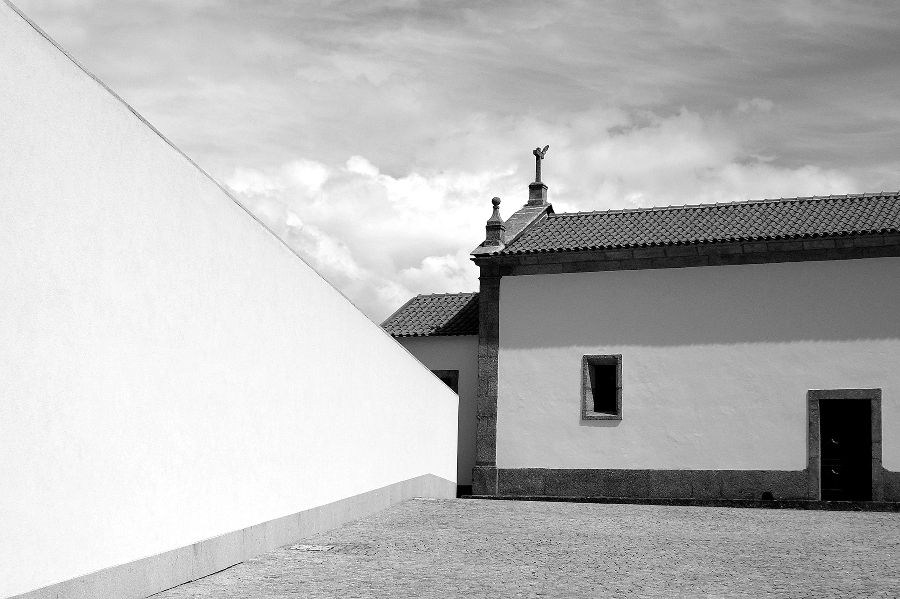

Viola Academy

Máté Szücs - Guest Professor
CIMS – Cidnay International Masterclass Series aims to be an event that promotes musical excellence, of an international character, for young musicians of renowned artistic merits, and to inspire the community and younger generations through music.
CIMS aims to affirm a holistic vision, providing participants and listeners with undeniable moments of musical subtlety, accompanied by time for relaxation and meditation, time to visit local cultural and environmental heritage, and time for sharing and debate, relating music with architecture, with sculpture, with the life of the community, from different chronological contexts.
Thus, CIMS will have has core concept the CONTACT. Contact between teacher and students, between participants of different latitudes, with other expressions and artistic languages, with fields of knowledge and experience complementary to music, with a variety of audiences, partners, between presential and digital. This way, we will fulfill the purpose of offering an inspiring program, rich in content, and that positions itself as an obligatory stop-off point for the most talented musicians.
To be held in a city bathed by the river Ave, CIMS will inspire young people through contact with a deep mark of the Baroque architecture, São Bento Monastery. In addition, Santo Tirso is, today, one of the European capitals of contemporary sculpture, with artworks distributed around the city, in spaces of enjoyment, such as squares, gardens and parks.
The architectural work of Álvaro Siza Vieira and Eduardo Souto de Moura, Pritzker Prizes, can also be admired, particularly the MIEC, Museu Internacional da Escultura Contemporânea (International Museum of Contemporary Sculpture).
© Carlos Vilela
It is within this context, of contact between historical and artistic periods, that fit the spaces where the masterclasses will be held, the rehearsals and the final concert, with openness to the local community. Both MIEC and Quinta de Fora are spaces with privileged views, close to the river and the last one property of an Agricultural Professional School.
The final concert and selected parts of the masterclasses, as well as the debate sessions and an interview to the invited master, will integrate the digital dimension of the program, through the creation of the Cidnay Digital Stage, which will comprise a microsite and coverage on social media.
The accommodation will also have a privileged space, in a charming unit, Cidnay Santo Tirso – Charming Hotel & Executive Center.
Finally, the event will assume a vocation of social responsibility, by establishing a partnership with a reference entity, in Portugal, in the childcare for children suffering abuse, to provide, within the program, awareness building amongst the younger generations to the importance of music in their recovery for life.
CIMS is seeking to stand in the national and international panorama of the events of artistic and cultural valorization, with a regular character.
August 28th to September 3rd 2021
- Viola Academy with Máté Szücs
- Talks with Extraordinary Artists
- Cidnay Curso Aberto (PT)
- Academy Final Concert
- Body Awareness Sessions
Máté Szücs - Guest Professor
Santo Tirso is a city located 24 km from Porto and Guimarães. The nearest airport is less than 20 km away and there are good railway and road connections available. Still from a geographic point of view, this city is located in a point of transition between the Atlantic coast and the inland part of the north of the country.

© Carlos Vilela
The historical origins are related with the existing monastery, founded (or rebuilt), during the 10th century, by the Benedictine monks. Santo Tirso has held the title of county seat since 1834, keeping a current population of about 70,000 inhabitants. Economically, the textile and clothing industries are well implanted in this region. In terms of areas of interest worth being mentioned, we cannot ignore the Ave River and the countless waterfalls, as well as natural parks and forests, thermal baths, and tourism farms. Additionally, you can also find Romanesque and Baroque monuments, local handicrafts, attend popular festivals and taste the local gastronomy and wines as well as the conventual sweets.
San Rosendo, who spent the last part of his life as a bishop in the already notorious cathedral of Santiago de Compostela (968-977), and was the founder of the Monastery of San Salvador de Celanova, which stimulated culture and the development of Christian kingdoms at the threshold of the year thousand, was born in the territory of Santo Tirso, in the current parish of São Miguel do Couto.

© Carlos Vilela
The quality of life in Santo Tirso is undeniably good and this idea is reinforced by the substantial cultural offer available. Amongst the existing cultural organizations, we can highlight MIEC - International Museum of Contemporary Sculpture, the Municipal Museum Abade Pedrosa (with a vast archaeological collection), the Municipal Historical Archive, the Municipal Library, the Interpretative Center of the Monte Padrão (Archaeological Station), ARTAVE - Artistic Professional School and countless other schools. In addiction, there are also spaces of exhibition and enjoyment, such as the Fábrica de Santo Thyrso and its Nave Cultural, or the Vila das Aves Cultural Center, together with sporting facilities and nature related activities.
Santo Tirso can also be proud of having a living heritage of musical ensembles, folklore and theater groups, dance academies, numerous local cultural spaces and festivities. There are several plastic artists who were born or currently reside in this city, amongst whom we name Tomaz Pelayo and José Cavadas, in addition to a vast group of great photographers.
It hosts an annual International Guitar Festival.
Email: cidnayims@gmail.com
Call: +351 932786766

© Carlos Vilela